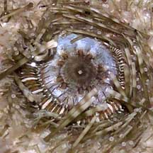

|
|
| worms text index | photo index |
|
worms > Phylum Annelida >
Class Polychaeta
|
| Urchin-mouth worm Oxydromus cf. angustifrons Family Hesionidae updated Oct 2016 Where seen? This small banded worm is seen curled around the mouth of White salmacis sea urchins and Black sea urchins on our Northern shores. What are Urchin-mouth worms? They are segmented worms belonging to the Family Eunicidae, Class Polychaeta, Phylum Annelida. The polychaetes include bristleworms, and Phylum Annelida includes the more familiar earthworm. Features: A small worm about 1-2cm long, cylindrical with tiny short legs. Usually banded brown and white. According to Chim Chee Kong, White salmacis sea urchins may have more than one worm, the largest one around the mouth, smaller ones elsewhere. Black sea urchins generally only have one worm, also around the mouth. |
 In a White salmacis sea urchin. Changi, Oct 10. |
 In a Black sea urchin. Changi, Jun 04 |
| Urchin-mouth worms on Singapore shores |
On wildsingapore
flickr
|
| Other sightings on Singapore shores |

Links
|